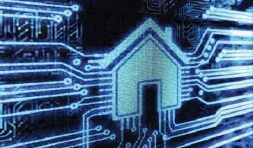

DOMOTICA.!
Que es la domotica?
La domótica es el conjunto de tecnologías aplicadas al control y la automatización inteligente de la vivienda, que permite una gestión eficiente del uso de la energía, que aporta seguridad y confort, además de comunicación entre el usuario y el sistema. Un sistema domótico es capaz de recoger información proveniente de unos sensores o entradas, procesarla y emitir órdenes a unos actuadores o salidas. El sistema puede acceder a redes exteriores de comunicación o información.
La domótica permite dar respuesta a los requerimientos que plantean estos cambios sociales y las nuevas tendencias de nuestra forma de vida, facilitando el diseño de casas y hogares más humanos, más personales, polifuncionales y flexibles.
Articulos que
Que aporta la domotica?
La domótica contribuye a mejorar la calidad de vida del usuario:
• Facilitando el ahorro energético: gestiona inteligentemente la iluminación, climatización, agua caliente sanitaria, el riego, los electrodomésticos, etc., aprovechando mejor los recursos naturales, utilizando las tarifas horarias de menor coste, y reduciendo así, la factura energética.
• Fomentando la accesibilidad: facilita el manejo de los elementos del hogar a las personas con discapacidades de la forma que más se ajuste a sus necesidades, además de ofrecer servicios de teleasistencia para aquellos que lo necesiten.
• Aportando seguridad mediante la vigilancia automática de personas, animales y bienes, así como de incidencias y averías. Mediante controles de intrusión, cierre automático de todas las aberturas, simulación dinámica de presencia, fachadas dinámicas, cámaras de vigilancia, alarmas personales, y a través de alarmas técnicas que permiten detectar incendios, fugas de gas, inundaciones de agua, fallos del suministro eléctrico, etc.
la domótica facilita la introducción de infraestructuras y la creación de escenarios que se complementan con los avances en la Sociedad de la Información:
• Comunicaciones: Transmisión de voz y datos, incluyendo textos, imágenes, sonidos (multimedia) con redes locales (LAN) compartiendo acceso a Internet, recursos e intercambio entre todos los dispositivos, acceso a nuevos servicios de telefonía sobre IP, televisión digital, televisión por cable, diagnóstico remoto, videoconferencias, etc.
• Mantenimiento: Con capacidad de incorporar el telemantenimiento de los equipos.
• Ocio y tiempo libre: Descansar y divertirse con radio, televisión, multi-room, cine en casa, videojuegos, captura, tratamiento y distribución de imágenes fijas (foto) y dinámicas (vídeo) y de sonido (música) dentro y fuera de la casa, a través de Internet, etc.

Salud: Actuar en la sanidad mediante asistencia sanitaria, consultoría sobre alimentación y dieta, telecontrol y alarmas de salud, medicina monitorizada, cuidado médico, etc.
• Compra: Comprar y vender mediante la telecompra, televenta, telereserva, desde la casa, etc. Finanzas: Gestión del dinero y las cuentas bancarias mediante la telebanca, consultoría financiera....
• Aprendizaje: Aprender y reciclarse mediante la tele-enseñanza, cursos a distancia...
• Actividad profesional: Trabajar total o parcialmente desde el hogar, posibilidad viable para ciertas profesiones (teletrabajo) , etc.
• Ciudadanía: Gestiones múltiples con la Administración del Estado, la Comunidad Autónoma y el Municipio, voto electrónico, etc.
Innovate El Salvador
Innovate El Salvador te ofrece la automatizacion de tu local comercial-empresa-vivienda o de cualquier parte de ella por medio de sistemas electricos y electronicos diseñados segun tu necesidad,
piensa en que te gustaria automatizar...
nosotros nos encargamos del como hacerlo.
-Sistemas de riego con programado automatico
-Acceso a puertas con tarjetas de identificacion
-Acceso a puertas protegidas con contraseña
-Control de sistema de audio por toda la casa
{kind=link}

{kind=link}
{kind=link}
{kind=link}